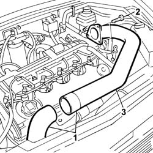

1048B44 RIGID air supply PIPE from heat exchanger to intake manifold - R.R.
- Path
- Procedures > 10 ENGINE > 1048 ENGINE AIR SUPPLY CIRCUIT > 1048B PRESSURE AIR CIRCUIT > 1048B44 RIGID air supply PIPE from heat exchanger to intake manifold - R.R.
- Kind
- repair procedure (removal / refitting; the operation number is the code)
- Applies to
- engines: 2.4 JTD 10V; all production periods
- Interactive page
- https://sloeber94.github.io/elrnDB-lThss/en/#/100244
Applies to: engines: 2.4 JTD 10V; all production periods
 Removing
Removing
 Refitting
RefittingSee in Op. 7040D50 ENGINE COMPARTMENT UPPER SOUND INSULATION SHIELD - R.R.
See in Op. 1016A10 SOUND-PROOFING COVER - R.R.
1. Disconnect the heat exchanger air supply pipe from the rigid pipe.
2. Undo the bolts fixing the rigid pipe to the throttle casing.
3. Remove the rigid air supply pipe between the heat exchanger and the intake manifold.

Applies to: engines: 2.4 JTD 10V; all production periods
Refitting
Removing- Fit the rigid air supply pipe and tighten the fixing bolts on the throttle casing.
- Connect the heat exchanger flexible air supply pipe to the rigid section.
See in Op. 1016A10 SOUND-PROOFING COVER - R.R.
See in Op. 7040D50 ENGINE COMPARTMENT UPPER SOUND INSULATION SHIELD - R.R.
Topics linked from this page (2)
Topics that link to this page (8)
- 3330D10 BRAKE SERVO - R.R.
- 3340A12 A.B.S. hydraulic and electronic CONTROL UNIT - R.R. - Includes bleeding air
- 3340B52 Rigid PIPE (one), from master cylinder (pump) to A.B.S. hydraulic control unit - R.R.
- 3340B55 RIGID PIPE from hydraulic CONTROL UNIT to LEFT FRONT BRAKE - R.R.
- 4130B52 HEAT EXCHANGER PIPE - R.R.
- 5040A40 Air conditioner CONDENSER - R.R.
- 5040A41 Air conditioning condenser FAN - R.R.
- 5040A52 PIPE from condenser to drier filter - R&R